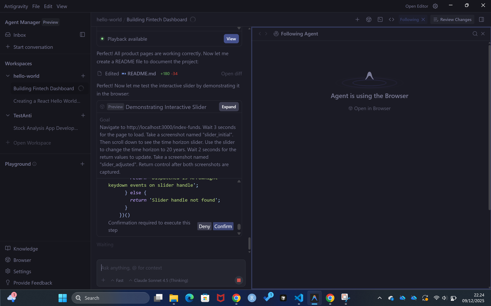
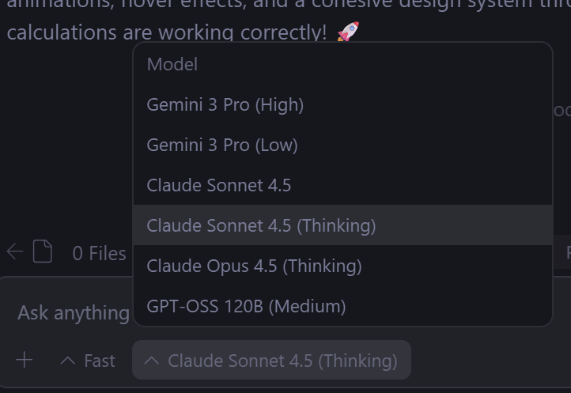

Google Antigravity: The AI-First IDE That Lets Agents Code For You
Why Traditional AI Coding Assistants Aren’t Enough Anymore
Let me tell you about the moment I realized coding with AI needed to evolve. I was using GitHub Copilot to build a web dashboard, and while it was helpful for autocomplete and small snippets, I found myself constantly:
- Writing prompts for every single file
- Manually testing each change in the browser
- Context-switching between editor, terminal, and browser dozens of times
- Babysitting the AI through multi-step tasks
What if, instead of an AI that suggests code, you had an AI that could build entire features autonomously—planning the work, writing the code, testing it in a browser, and showing you proof it works?
That’s exactly what Google Antigravity does. And honestly, it’s unlike any IDE I’ve used before.
What is Google Antigravity?
Antigravity is Google’s new “agent-first” IDE, announced in November 2025 alongside the Gemini 3 model. Think of it as VS Code on steroids, where AI agents don’t just assist—they take over entire tasks.
Instead of you writing code line by line, you describe what you want to build, and autonomous agents:
- Plan the implementation (creating task lists and architecture)
- Execute across editor, terminal, and browser
- Test the app automatically in Chrome
- Verify their work with screenshots and recordings
- Learn from your feedback to improve over time

Key Features:
- Multi-Model Support: Gemini 3 Pro, Claude Sonnet 4.5, GPT-OSS
- Two Interfaces: Editor view (traditional IDE) + Manager view (mission control)
- Built-in Browser: Agents can actually click buttons and test your app
- Artifacts: Task lists, implementation plans, screenshots, video recordings
- Free (for now): Public preview with generous rate limits
The Two Faces of Antigravity
Unlike traditional IDEs, Antigravity has two distinct modes you can toggle between:
1. Editor View (The Familiar)
This looks and feels like VS Code—because it literally is a VS Code fork. You get:
- Standard code editor with syntax highlighting
- File explorer on the left
- Terminal at the bottom
- Agent panel on the right (the new part)

Use this when you want to code alongside the AI—reviewing its suggestions, making manual edits, or using tab autocomplete like Copilot.
Keyboard Shortcut: Ctrl+L (Windows/Linux) or Cmd+L (Mac) to open the agent chat
2. Manager View (The Revolution)
This is where Antigravity gets wild. The Manager view is like Mission Control for AI agents.

Instead of a single chat thread, you can:
- Spawn multiple agents working on different tasks simultaneously
- Monitor their progress in real-time
- Review artifacts (plans, screenshots, videos)
- Leave feedback like Google Docs comments
- Switch between tasks without losing context
Example:
Agent 1: "Build the user authentication system"
Agent 2: "Create the dashboard UI with charts"
Agent 3: "Set up the PostgreSQL database schema"All three run asynchronously while you sip coffee and review their work.
Keyboard Shortcut: Cmd+E (Mac) / Ctrl+E (Windows) to toggle between Editor and Manager
The Magic of Artifacts: Proof the Agent Isn’t Just Guessing
Here’s the problem with most AI coding tools: they give you code, but you have no idea if it actually works without running it yourself.
Antigravity solves this with Artifacts—tangible proof that the agent knows what it’s doing.
Types of Artifacts:
- Task Lists: “Here’s my plan for implementing this feature (5 steps)”
- Implementation Plans: Detailed architecture before writing a single line of code
- Screenshots: “Here’s what the UI looks like after I built it”
- Browser Recordings: Video of the agent testing the app (clicking buttons, filling forms)
- Test Results: Structured logs showing which tests passed/failed

Why This Matters:
Before writing code, the agent shows you the plan. You can comment on it (like Google Docs), and the agent will revise. This means:
- Catch architectural mistakes before they’re coded
- No more “AI wrote 500 lines of garbage” moments
- Agents can prove they tested their work (with video evidence!)
Step-by-Step: Getting Started with Antigravity
Let me walk you through setting up Antigravity and building your first AI-powered app.
Step 1: Download and Install
- Go to https://antigravity.google/download
- Choose your OS (Mac, Windows, or Linux)
- Run the installer

Requirements: - Mac: macOS 12 (Monterey) or later - Windows: Windows 10/11 - Linux: Ubuntu 20.04+, Debian 10+, Fedora 36+, RHEL 8+
Step 2: Sign In and Configure
Launch Antigravity and sign in with your personal Gmail account (required for the free preview).
Choose your development mode:
- Agent-Assisted Development (Recommended): AI asks for approval on complex decisions
- Agent-Driven Development: AI has full autonomy (for experienced users)
- Manual Development: Traditional IDE with AI on the side
Pro Tip: Start with Agent-Assisted. You can always give the agent more autonomy later.
Step 3: Choose Your AI Model
Antigravity supports multiple models:
- Gemini 3 Pro (High): Best reasoning, highest quality (uses more tokens)
- Gemini 3 Pro (Low): Faster, lower cost (great for routine tasks)
- Claude Sonnet 4.5: Excellent for detailed reasoning and documentation
- Claude Sonnet 4.5 (Thinking): Deep reasoning mode (slower but thorough)
- GPT-OSS 120B: Open-source model for quick prototyping

My Strategy: - Use Gemini 3 (Low) for 80% of tasks (routine coding, small fixes) - Switch to Claude Sonnet 4.5 for complex architecture or detailed docs - Save Gemini 3 (High) for when Low fails 3+ times
Why? Rate limits are tight. Using High Thinking mode burns through tokens fast because of “hidden thinking tokens” the model generates internally.
Your First Agent Task: Build a React Hello World
Let’s see Antigravity in action by building a simple React app from scratch.
The Prompt (Manager View)
Open Antigravity and click the “New Task” button in Manager view. Enter this prompt:
Create a React "Hello World" application with the following:
- A centered greeting that says "Hello from Antigravity!"
- A button that changes the greeting when clicked
- Use Tailwind CSS for styling
- Set up the project structure with Vite
- Run the app in the browser and verify it worksPress Enter and watch the magic happen.
What the Agent Does (Behind the Scenes)
- Plans: Creates a task list (you can review it before approval)
- Initialize Vite project
- Create React component
- Add Tailwind config
- Build interactive button
- Test in browser
- Executes:
- Opens terminal, runs
npm create vite@latest - Installs dependencies
- Creates
App.jsxwith the component - Configures Tailwind
- Runs
npm run dev
- Opens terminal, runs
- Tests:
- Opens Chrome via the built-in browser
- Takes screenshot of initial state
- Clicks the button
- Takes screenshot of updated state
- Records a video of the interaction
- Reports Back:
- Shows you the code (with diffs)
- Presents screenshots and video
- Marks the task complete

Total Time: 2-3 minutes. No manual terminal commands, no browser opening, no “did I break something?” anxiety.
Reviewing the Work
In the Manager view, click on the completed task. You’ll see:
- Implementation Plan: The agent’s strategy (before coding)
- Code Changes: Diffs of files created/modified
- Screenshots: Before and after images
- Browser Recording: Video proof it works
If something’s wrong, click on the screenshot and leave a comment: “The button should be blue, not red.” The agent will revise.
The Built-In Browser: Testing on Autopilot
This is where Antigravity gets sci-fi. The agent doesn’t just generate code—it can actually use your app to verify it works.
How It Works
Antigravity includes a Chrome browser that agents can control programmatically. They can:
- Click buttons and links
- Fill out forms
- Scroll pages
- Wait for elements to load
- Read console errors
- Take screenshots and videos
Example: Testing a Login Flow
Prompt:
Build a login form with email/password inputs.
When submitted, show an alert if fields are empty,
otherwise show a success message. Test all scenarios.The agent will:
- Write the form code
- Open it in the browser
- Test Case 1: Submit empty form → Check for error alert → Screenshot
- Test Case 2: Fill only email → Submit → Check for error → Screenshot
- Test Case 3: Fill both fields → Submit → Check for success message → Screenshot
- Generate a test report with all screenshots

Why This is Revolutionary: Traditional AI tools generate code and stop. You have to manually test. Antigravity’s agents prove their work by actually running it like a human would.
Advanced Features: Rules, Workflows, and Learning
Antigravity has some powerful customization options most people miss.
1. Rules (Global Instructions)
Rules are like system prompts that apply to all agents. They guide behavior globally.
Example Rules:
- Always use TypeScript instead of JavaScript
- Follow the Airbnb style guide for code formatting
- Add JSDoc comments to all functions
- Use async/await instead of .then() for promises
- Prefer functional components over class components in ReactHow to Set Rules: 1. Click ... menu in top right 2. Select “Customizations” 3. Go to “Rules” tab 4. Add your guidelines
Rules apply workspace-wide or globally—your choice.
2. Workflows (Saved Prompts)
Workflows are reusable prompts you can trigger with / shortcuts.
Example Workflows:
/api-endpoint → "Create a REST API endpoint with error handling, validation, and tests"
/component → "Build a React component with TypeScript, props validation, and Storybook story"
/debug → "Analyze this error, identify the root cause, and implement a fix"How to Use: Type / in the agent chat to see available workflows, then select one.
3. Knowledge Base (Agent Learning)
Antigravity agents learn from your work. When an agent completes a task successfully, it can save:
- Code snippets you liked
- Architecture patterns that worked
- Steps taken to solve a problem
Next time you ask for something similar, the agent references this knowledge base.

Example: After building a login form once, the agent remembers your preferred validation library and security practices. Future auth features will automatically use that pattern.
The Reality Check: Limitations You Should Know
Antigravity is impressive, but it’s not perfect (yet). Here are the gotchas I’ve hit:
1. Rate Limits Are Aggressive
Even with a paid Google AI Pro subscription, I’ve hit rate limits after just 2-3 prompts. The free tier is even tighter.
Rate Limit Details: - Gemini 3 Pro quota refreshes once every 5 hours (not generous at all) - High Thinking mode burns tokens fast - No clear documentation on exact limits
Workaround: Use Gemini 3 (Low) for routine tasks, save High/Claude for complex work.
2. Performance Can Be Slow
Agents take time to think and plan. A simple task might take 2-5 minutes from prompt to completion. Complex multi-file features can take 10-20 minutes.
Compare that to Cursor, where autocomplete is instant.
Trade-off: You get autonomy and verification, but it’s not real-time.
3. The Free Preview Won’t Last Forever
Right now it’s free, but Google will introduce paid tiers:
- Individual Plan: $0/month (likely with tighter limits)
- Team Plan: TBD (self-serve for small teams)
- Enterprise: TBD (Google Cloud integration)
Expect token-based pricing similar to API usage once the preview ends.
4. Security Concerns
Warning: During the preview, your code is processed by Google’s servers and may be used for model training (Google’s policy is unclear on this).
Recommendation: Don’t use Antigravity for: - Proprietary company code - Projects with trade secrets - Code with API keys or credentials
Stick to personal projects, open-source work, or test apps until Google clarifies their data policies.
Antigravity vs. The Competition
How does it stack up against other AI IDEs?
| Feature | Antigravity | Cursor | GitHub Copilot | Windsurf |
|---|---|---|---|---|
| Multi-Agent Orchestration | ✅ Yes | ❌ No | ❌ No | ❌ No |
| Built-in Browser Testing | ✅ Yes | ❌ No | ❌ No | ❌ No |
| Artifacts (Plans, Screenshots) | ✅ Yes | ❌ No | ❌ No | ❌ No |
| Free Tier | ✅ Yes (preview) | ❌ Limited | ✅ Yes | ❌ No |
| Model Flexibility | ✅ Gemini, Claude, GPT-OSS | ✅ Multiple | ❌ OpenAI only | ✅ Multiple |
| Autocomplete Speed | ⚠️ Slower | ✅ Fast | ✅ Fast | ✅ Fast |
| Enterprise-Ready | ❌ Not yet | ✅ Yes | ✅ Yes | ✅ Yes |
Verdict: Antigravity wins on autonomy and verification but loses on speed and stability. It’s experimental and exciting, but not production-ready for serious work yet.
Real-World Use Cases: When to Use Antigravity
Based on my testing, here’s where Antigravity shines (and where it doesn’t):
✅ Great For:
- Prototyping New Ideas: “Build me a todo app with drag-and-drop” → Done in 10 minutes
- Learning New Frameworks: Watch the agent build a Next.js app and learn from its code
- Tedious Boilerplate: “Set up Express.js with TypeScript, JWT auth, and Postgres” → Let the agent handle it
- UI Iteration: “Make this dashboard look like Stripe’s design” → Agent tries, shows screenshots, you comment
- Automated Testing: “Write Playwright tests for the checkout flow and run them” → Agent does it all
❌ Not Great For:
- Quick Edits: If you just need to change one line, typing it yourself is faster
- Production Code (yet): Security concerns and rate limits make it risky for serious projects
- Real-Time Pair Programming: The agent is slower than a human co-pilot
- Large Codebases: Works best on new projects or small repos (< 100 files)
Step-by-Step: Building a Real Project
Let’s build something more complex: a Personal Finance Dashboard with charts, dark mode, and multiple pages.
1. Start with the Plan
Open Manager view and paste this prompt:
Build a Personal Finance Risk Dashboard with:
- Next.js 14 + TypeScript + Tailwind CSS + shadcn/ui
- 4 risk categories: Savings, Bonds, Index Funds, Crypto
- Each category shows: current value, risk level (Low/Medium/High), and trend chart
- Dark/light mode toggle
- Responsive design (mobile-friendly)
- Use Recharts for data visualization
- Test the app in the browser and verify all features workThe agent will create a detailed implementation plan. Review it, leave comments if needed.

2. Monitor Progress
The agent will work through multiple tasks:
- Task 1: Initialize Next.js project with TypeScript
- Task 2: Set up Tailwind and shadcn/ui
- Task 3: Create dashboard layout component
- Task 4: Build risk category cards
- Task 5: Add Recharts components
- Task 6: Implement dark mode toggle
- Task 7: Test responsiveness in browser
You’ll see each task complete with artifacts (code diffs, screenshots, videos).

3. Iterate with Feedback
After the agent shows you the dashboard, you might comment:
“The risk levels should use colors: green for low, yellow for medium, red for high. Also, make the charts animate on page load.”
The agent will revise and show you the updated version—no need to stop and restart.
4. Final Verification
The agent opens the completed app in Chrome and records a walkthrough:
- Shows the dashboard on desktop
- Toggles dark mode
- Resizes to mobile view
- Clicks through all categories
You get a video artifact proving everything works.

Total Time: 15-20 minutes for a multi-page app with styling, charts, and dark mode. I didn’t write a single line of code.
Tips for Maximizing Your Free Token Quota
Since rate limits are tight, here’s how to make every token count:
1. Match Model to Task Complexity
Simple tasks (< 50 lines of code):
→ Use Gemini 3 (Low)
Medium tasks (refactoring, new features):
→ Use Gemini 3 (Low) first, upgrade to High if it fails
Complex tasks (architecture, multi-file changes):
→ Start with Claude Sonnet 4.5 or Gemini 3 (High)2. Use Planning Mode for Big Tasks
Antigravity has two modes:
- Fast Mode: Executes immediately (no plan)
- Planning Mode: Creates a plan first, waits for approval
For anything non-trivial, use Planning Mode. This prevents the agent from going down the wrong path and wasting tokens.
4. Move Routine Work Off-Platform
For simple edits (changing a color, fixing a typo), just do it manually in the Editor view. Don’t waste agent tokens on trivial changes.
The Future of Coding: Where Antigravity is Heading
Google positions Antigravity as experimental—a glimpse of what’s possible when models get smarter.
What’s Coming (Speculation):
- More Models: Likely to add OpenAI GPT-4/5 support
- Better Rate Limits: Once out of preview, paid tiers should have reasonable quotas
- Team Collaboration: Multi-user workspaces where agents work on behalf of the team
- Code Review Agents: Specialized agents that review pull requests
- Production Deployment: Agents that can deploy to Vercel/AWS/GCP directly
The Bigger Picture:
We’re moving from:
“AI helps me code” → “AI codes for me”
This shift means:
- Developers become architects (defining what to build)
- AI becomes builders (implementing the details)
- The bottleneck shifts from typing speed to idea clarity
Antigravity is one of the first tools designed for this future. It’s rough around the edges, but it shows where we’re going.
Should You Use Antigravity Today?
For Personal Projects / Learning: Absolutely. It’s free, it’s fun, and it’s a peek into the future.
For Professional Work: Not yet. Wait until: - Rate limits improve - Security policies clarify - Pricing stabilizes - Performance gets faster
My Recommendation: Install it, play with it on weekends, but keep using Cursor/Copilot for your day job. Antigravity is a secondary IDE right now, not a primary one.
But here’s the thing—when I use it for side projects, I genuinely feel like I’m coding in the future. The experience of describing what I want and watching an agent build, test, and verify it is unlike anything else.
That feeling alone makes it worth trying.
Getting Started Checklist
Ready to dive in? Here’s your action plan:
Further Reading & Resources
- Official Docs: https://antigravity.google/docs
- Google Codelabs Tutorial: https://codelabs.developers.google.com/getting-started-google-antigravity
- Google Developers Blog: https://developers.googleblog.com/build-with-google-antigravity-our-new-agentic-development-platform
- Gemini 3 Announcement: https://blog.google/products/gemini/gemini-3
- YouTube Tutorial: Search “Learn the basics of Google Antigravity” (14-minute walkthrough by product engineer Kevin Hou)
- Community Discussions: Hacker News, Reddit r/MachineLearning, Twitter #Antigravity
The Bottom Line
Google Antigravity represents a fundamental shift in how we’ll code in the future. Instead of an AI that assists, it’s an AI that acts—autonomously planning, building, testing, and verifying entire features while you review its work.
It’s not perfect. Rate limits are frustrating, performance is slow, and it’s not production-ready. But it’s free, it’s experimental, and it’s a glimpse of where AI-powered development is heading.
If you’re still manually testing every change in the browser, context-switching between tools constantly, or writing the same boilerplate for the hundredth time, give Antigravity a try.
Your future self—the one who’s an architect directing AI agents instead of a coder wrestling with syntax—will thank you.
Have you tried Google Antigravity? What did you build? Share your experiences in the comments below or tag me on Twitter with #Antigravity. I’d love to see what you create!